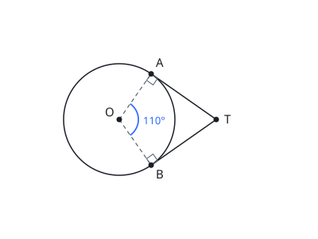

State — question with an image three-line stem · figure at its natural size · an option that wraps to two lines · body scrolls, header and actions do not
Question 9 of 20 — Weekly Quant Sprint #27
Q9 of 20
Quant
0:17:20left in the window
Question 9 of 20. 8 behind you.
Speed bonus decaying
0:31this question
In the figure below, O is the centre of the circle and the radii OA and OB meet at an angle of 110°. TA and TB are tangents to the circle, touching it at A and B respectively. Find the measure of ∠ATB.

State — final seconds, window closing question timer thickens and hatches; the window pill changes fill and gains words · neither borrows the other's form
Question 9 of 20 — Weekly Quant Sprint #27
Q9 of 20
Quant
0:04:59final minutes
Question 9 of 20. 8 behind you. Four seconds left on this question.
Final seconds
0:04this question
In the figure below, O is the centre of the circle and the radii OA and OB meet at an angle of 110°. TA and TB are tangents to the circle, touching it at A and B respectively. Find the measure of ∠ATB.